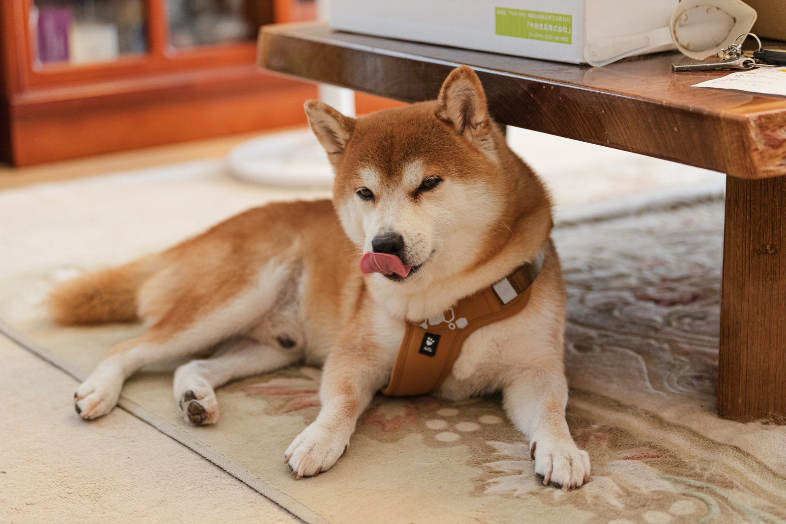
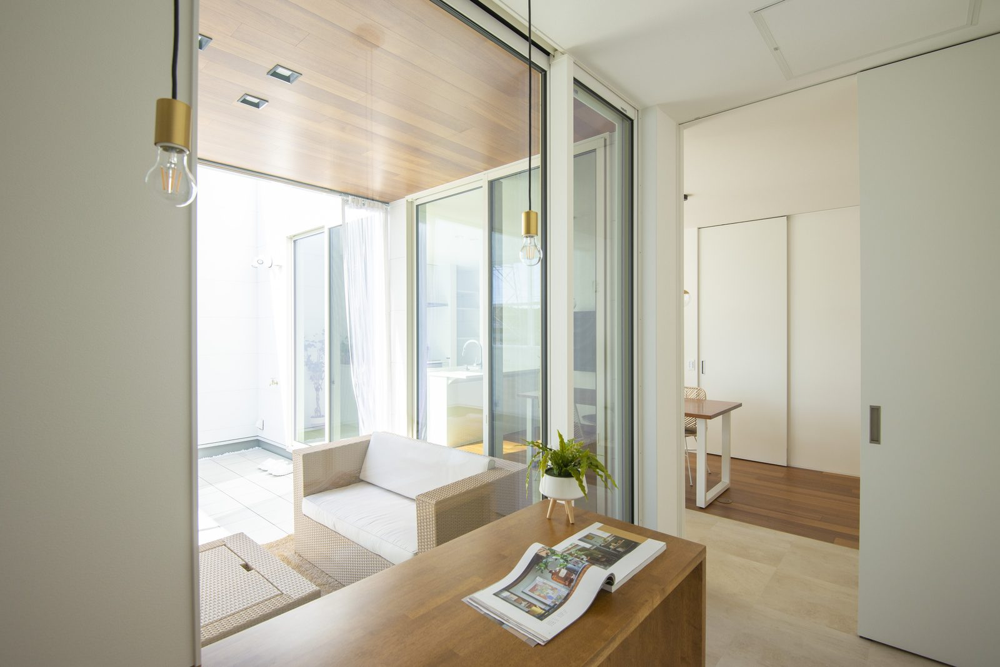
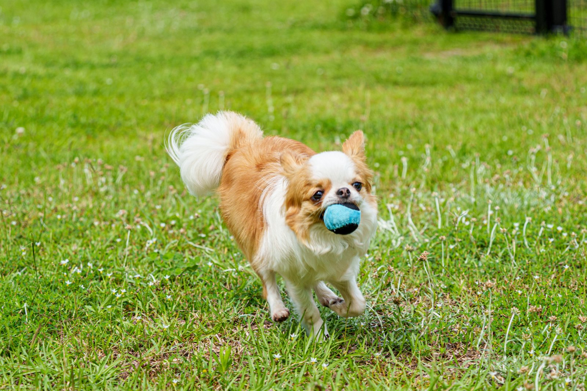
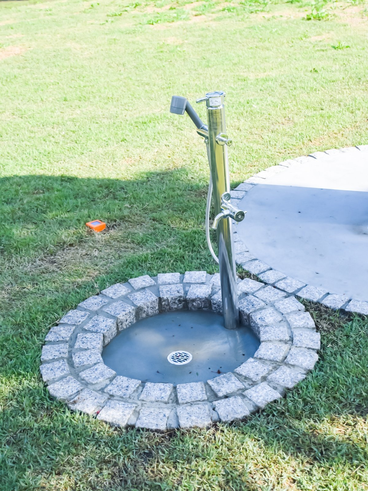
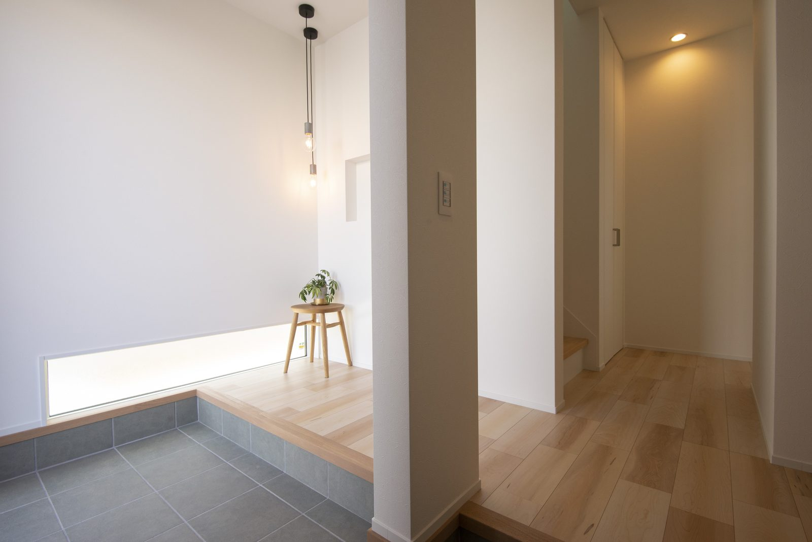

犬と暮らす家づくりで、何をいちばん心配しますか？
匂い、傷、床の滑り、お散歩帰りの足。
心配ごとは多いようで、実は場所ごとに答えがあります。
シバ・サンホームが実際の家づくりで採用してきた工夫を、7つにまとめました。
大工社長も、犬と暮らす家の設備を動画で話しています。
7つのポイント、先に一覧で
- その1匂いの出る場所だけ、調湿タイルを貼る
- その2ひっかき傷に強い壁紙を選ぶ
- その3壁紙を上下で貼り分けておく
- その4キッチンの入口にゲートを付ける
- その5階段下を犬の居場所にする・床は滑りにくく
- その6庭は手入れの少ない草でドッグランに
- その7お散歩帰りの足洗い場をつくる
匂いと傷は、壁で解決します
犬の匂いが気になるのは、家じゅうではありません。
水飲み場、ご飯の場所、トイレまわり。
匂いの出る場所は決まっています。
だから、その場所にだけ調湿・脱臭効果のあるタイルを貼ります。
珪藻土の塗り壁は調湿に優れますが、犬が体を擦り寄せると抜け毛が付きやすい。
ベースは壁紙にして、要所だけタイルにする組み合わせが現実的です。
ひっかき傷には、ペット対応の丈夫な壁紙があります。
さらに、人の腰の高さで壁紙を上下に貼り分けておくと？
汚れても下半分だけ貼り替えられて、全面貼り替えより費用を抑えられます。
床と居場所は、犬の体を守ります

ワックスがけの要らない床板なら、日々の掃除も楽です。
ツルツルの床は、犬の足腰に負担がかかります。
滑りにくい床材、水分と汚れを拭き取れる床材を選んでください。
ワックスがけの要らない床板なら、お手入れも楽になります。
居場所づくりには、階段下のデッドスペースが向いています。
水飲み場、ご飯の場所、お昼寝の場所。
壁を拭き取れる素材にしておくと、汚れても困りません。

犬はこういう場所が落ち着きます。階段下の居場所づくりも同じ考え方です。（写真はイメージ）
もうひとつ、キッチンの入口にはゲートを。
犬が食べてはいけない食材の誤食を防ぎます。
ロール式で巻き取れるタイプなら、普段は邪魔になりません。
外まわりは、遊びと帰り道の準備

ガラス越しに、家の中から犬の様子を見守れます。

庭があれば、天気のいい日に思いきり遊ばせてあげられます。
ただ、芝生は伸びれば刈り、枯れれば植え直しと、手入れが大変です。
タマリュウという丈夫な草なら、手入れが少なく雑草対策にもなります。
そして、お散歩帰りの足洗い場。
これは必須だと考えています。
お湯も出るようにしておくと、冬の足洗いも嫌がられません。

お散歩帰りの足洗いが、玄関前で終わります。（写真はイメージ）

土間は汚れても水拭きできるのが強みです。
匂いの出る場所、傷つく高さ、濡れる帰り道。
先に分かっていれば、間取りと素材で解決できます。
あとから直すより、建てるときに仕込むほうが安くつきます。
犬も家族。だから間取りに入れる
犬の居場所を、余ったスペースで済ませていませんか？
家族の一員なら、最初から間取りに入れてあげてください。
シバ・サンホームの家づくりは、セミオーダーから建築家の自由設計まで。
犬と暮らす工夫も、設計の段階から一緒に考えられます。

奈良の工務店シバ・サンホームで、初めての家づくりに伴走しています。お金のことこそ正直に。モットーはスピード・誠実さ・楽しさ。